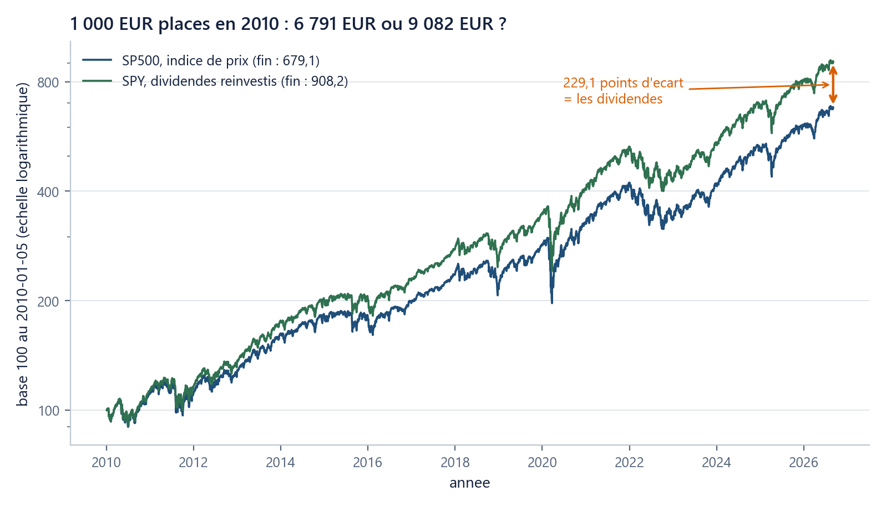

Où suis-je ? unité 1 sur 5
Les unités du chapitre
- 01Un prix n'est pas un rendement20 min
- 02La volatilité mesure l'écart au centre35 min
- 03Diversifier, ce n'est pas moyenner25 min
- 04Un euro demain ne vaut…20 min
- 05Une option, c'est d'abord un…25 min
Dans cette unité
Les objets de la finance qu'on peut observer
Un prix n’est pas un rendement
Un rendement compte la variation et les revenus ; les log-rendements s'additionnent dans le temps, les rendements simples se pondèrent entre actifs.
Durée : 20 min · Prérequis : ch00 u02 (variables, types), u03 (listes, tranches), u04 (boucles), u05 (fonctions, assert), u06 (numpy, np.log, np.exp).
1. La question
Le S&P 500 (un indice qui suit les cours de cinq cents grandes sociétés américaines) valait 1 136,52 le 5 janvier 2010. Le 4 septembre 2026, il vaut 7 718,60. Ce sont les deux extrémités du jeu de données du cours : 4 151 séances de bourse, les jours où le marché a ouvert. Elles sont chargées par charger_fil_rouge(), la fonction fournie du cours ; nous la lirons au §6, et vous n'aurez jamais à l'écrire.
Un épargnant a placé 1 000 € sur cet indice le 5 janvier 2010 et n'y a plus touché. Le 4 septembre 2026, combien a-t-il ?
Le prix d'un actif, noté S_t, est le nombre d'euros qu'il faut payer à la date t pour en détenir une unité. Nous avons deux prix. La question demande autre chose : de combien le capital a grandi. C'est un rendement, et ce n'est pas la même chose qu'un prix.
2. On essaie d’abord
Écrivez deux réponses avant de lire la suite. Elles seront confrontées au résultat dans les deux sections qui suivent.
(a) Le montant, en euros, obtenu en 2026. (b) Un placement perd 50 % une année, puis gagne 50 % l'année suivante. Sur les deux ans : gain, perte, ou match nul ?
3. Deux réponses au lieu d’une
Le calcul direct : 1\,000 \times 7\,718{,}60 / 1\,136{,}52 = \mathbf{6\,791{,}43} €. Le capital a été multiplié par 6,79.
Le même jeu de données contient une deuxième colonne, SPY : les cours du plus gros fonds coté sur le S&P 500 (il détient les mêmes cinq cents sociétés) corrigés des dividendes versés, c'est-à-dire recalculés comme si chaque dividende avait été aussitôt réinvesti (auto_adjust=True, data/README_DATA.md). Le fonds, lui, les verse en espèces quatre fois par an : c'est le calcul qui les remet dedans, comme le ferait un épargnant qui réinvestit. Un dividende est un revenu versé au détenteur d'une action ; le jour où il est versé, il sort du prix de l'action. Sur SPY, la même mise de 1 000 € donne 9 082,18 €.
Deux mille deux cent quatre-vingt-onze euros d'écart, sur le même marché, pendant les mêmes seize ans et huit mois. Le premier chiffre suit un indice de prix : il ne regarde que les cours. Le second suit un indice dividendes réinvestis. La différence est le dividende, au frottement près des frais du fonds, environ 9 points de base par an, et rien d'autre.
Ramenées à une base 100 le 5 janvier 2010 (chaque série divisée par sa valeur de ce jour-là, puis multipliée par 100), les deux courbes finissent à 679,1 et 908,2 : 229,1 points d'écart. En taux annuel, celui du TCAC, taux de croissance annuel composé, c'est-à-dire le taux constant qui aurait mené du premier au dernier prix, cela fait 12,18 % contre 14,16 %, soit 1,974 point par an ; en taux continu, cet écart est le taux de dividende q \simeq 1{,}74\,\%, la part du prix reversée chaque année en revenus. (data/stats_summary.md publie 12,20 % et 14,17 % : il part d'une séance plus tôt, le 4 janvier 2010, et deux centièmes de point d'écart en découlent.)

4. L’échelle qui répare l’addition
Passons à la question (b). Rendement simple de l'année 1 : R_1 = -0{,}50. Année 2 : R_2 = +0{,}50. Leur somme vaut zéro, mais 1 € devient 1 \times 0{,}50 \times 1{,}50 = 0{,}75 €, soit −25 %. Les rendements simples se multiplient dans le temps ; les additionner est faux.
Il existe une écriture du même mouvement qui, elle, s'additionne. On prend le logarithme du rapport des prix.
Sur notre exemple : \ln 0{,}50 = -0{,}6931, \ln 1{,}50 = +0{,}4055, somme = -0{,}2877, et e^{-0{,}2877} - 1 = -25{,}00\,\%. La même réponse, obtenue par une addition.
Quatre repères à mémoriser, parce qu'ils disent quand les deux échelles se ressemblent et quand elles divergent :
| Rendement simple R | −50 % | −1 % | +1 % | +50 % |
|---|---|---|---|---|
| Log-rendement \ell | −69,31 % | −1,005 % | +0,995 % | +40,55 % |
Sous ±1 %, les deux chiffres sont indiscernables à un demi-point de base près, et à ±2 % l'écart n'est encore que de deux points de base, et c'est pourquoi la confusion survit si longtemps. Au-delà, ils s'écartent, et \ell est toujours plus petit que R.
5. La double asymétrie
Voilà l'idée à retenir, et elle a deux moitiés :
| Question | Échelle correcte | Opération |
|---|---|---|
| Empiler plusieurs dates d'un même actif | log | on additionne les \ell_t |
| Mélanger plusieurs actifs sur une même date | simple | on pondère les R_t par les poids |
La seconde moitié se démontre sur une seule séance. Une ligne est un actif détenu avec son poids ; le portefeuille du cours en compte six. Le 12 mars 2020, elles ont fait, en rendements simples : SP500 −9,51 %, CAC40 −12,28 %, AAPL −9,88 %, LVMH −8,68 %, GLD −3,99 %, TLT +0,62 %. Avec les poids 40/20/10/10/10/10, le portefeuille a perdu −8,4521 %. Le même calcul mené sur les log-rendements pondérés donne −8,9103 % : 45,8 points de base d'erreur en une seule séance, dans le mauvais sens.
6. Le piège classique : la moyenne des lignes n’est pas le résultat du mélange
Le code du fil rouge tient en onze lignes. Nous lisons chaque ligne, parce que plusieurs constructions y apparaissent pour la première fois sur des données réelles.
import sys; sys.path.insert(0, "..") # 1
import numpy as np # 2
from mcdp_utils import charger_fil_rouge # 3
donnees = charger_fil_rouge() # 4
prix = donnees["prix"]["SP500"] # 5
ell = np.log(prix[1:] / prix[:-1]) # 6
print(ell.size, prix.size) # 7 -> 4150 4151
print(np.exp(ell.sum()) - 1) # 8 -> 5.791433465465942
i = int(np.where(donnees["dates"] == np.datetime64("2020-03-12"))[0][0]) # 9
R = {a: np.exp(donnees["rendements_log"][a][i]) - 1 for a in donnees["poids"]} # 10
print(sum(donnees["poids"][a] * R[a] for a in R)) # 11 -> -0.084521
Ligne 1 : sys.path.insert(0, "..") dit à Python d'aller chercher le module commun mcdp_utils.py, un dossier au-dessus. Ligne 3 : on n'importe que la fonction dont on a besoin. Ligne 4 : charger_fil_rouge() rend un dictionnaire, le rangement à clés de ch00 u03. Ligne 5 : la clé "prix" donne un dictionnaire d'actifs ; la clé "SP500" donne un tableau numpy de 4 151 prix. Ligne 6 : prix[1:] est la tranche « tout sauf le premier », prix[:-1] « tout sauf le dernier » ; les deux ont 4 150 cases, et numpy divise case à case : c'est la vectorisation de ch00 u06, une opération écrite une fois et appliquée 4 150 fois. Ligne 7 : 4 150 rendements pour 4 151 prix, d'où une précision qui évitera une surprise au TP. charger_fil_rouge() livre aussi une clé "rendements_log" qui contient, elle, 4 151 valeurs : son premier rendement est calculé à partir du cours du 4 janvier 2010, une séance que la clé "prix" ne contient pas. Les deux séries disent la même chose ; elles n'ont simplement pas la même première date, et le cours emploie partout la seconde. Ligne 8 : la somme des 4 150 log-rendements, ramenée en rendement simple par e^x - 1, redonne exactement +579,14 %, c'est-à-dire le facteur 6,79 du début. Lignes 9 à 11 : les six rendements simples du 12 mars 2020, pondérés, redonnent les −8,4521 % du §5.
7. Vérifiez-vous
- (★) Une action passe de 40 € à 50 € et verse 2 € de dividende dans l'intervalle. Rendement total sur la période ?
- (★) Un placement fait +10 % puis −10 %. Que vaut la somme des deux log-rendements ? Et la richesse finale ?
- (★★) Les 4 150 log-rendements du S&P 500 calculés à partir de la colonne
prixs'additionnent à 1,9157. Quel rendement simple cela fait-il, et retrouvez-vous le facteur 6,79 ? - (★, retour sur ch00 u06) Avec un tableau numpy
prix, quelle expression d'une ligne donne le tableau des log-rendements ? - (★, retour sur ch00 u03) Pourquoi
prix[1:]etprix[:-1]ont-ils la même longueur, et laquelle ?
Réponses
8. Ce que vous savez faire maintenant
- Distinguer un indice de prix d'un indice dividendes réinvestis, et chiffrer l'écart (679,1 contre 908,2 en base 100).
- Convertir un rendement simple en log-rendement et l'inverse, et dire lequel s'additionne dans le temps, lequel se pondère entre actifs.
- Calculer les log-rendements d'une série de prix en une ligne de numpy, et vérifier le résultat en revenant au rendement total.
Unité suivante. Nous savons mesurer un mouvement passé, pas dire s'il était calme ou agité, et c'est ce chiffre-là qui décidera de tout le reste du cours.
Sources. IEFP, Rendement et risque des placements en actions, https://www.lafinancepourtous.com/decryptages/finance-perso/epargne-et-placement/rendement-et-risque-des-placements-en-actions/ · pfolio.io academy, Log returns vs simple returns, https://www.pfolio.io/academy/log-vs-simple-returns · C. Batanero, J. D. Godino, A. Vallecillos, D. R. Green, P. Holmes, « Errors and difficulties in understanding elementary statistical concepts », International Journal of Mathematical Education in Science and Technology 25(4), 1994, p. 527-547 (l'ascenseur), https://www.ugr.es/~batanero/pages/ARTICULOS/errors.PDF